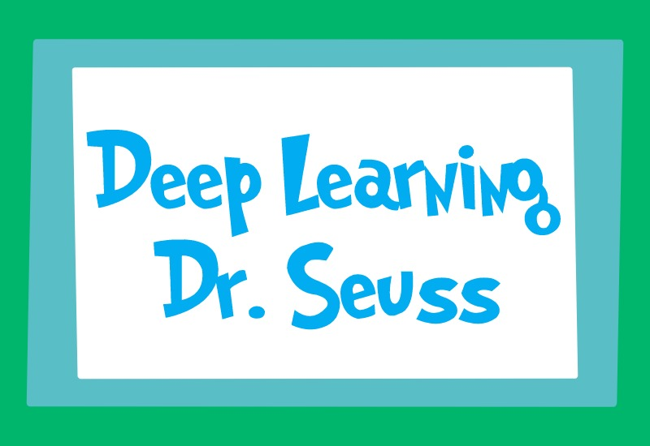
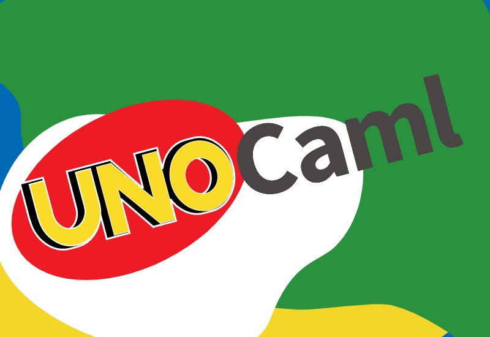

< back
Deep Learning Dr. Seuss
Dr. Seuss styled text generation using Long Short-Term Memory Networks.
github

Identifying Yelp Experts
Research proposal and creation of a "Local Authority Model" to improve Yelp recommendations for local users.
github
UNOCaml
UNO implemented in OCaml.
github
